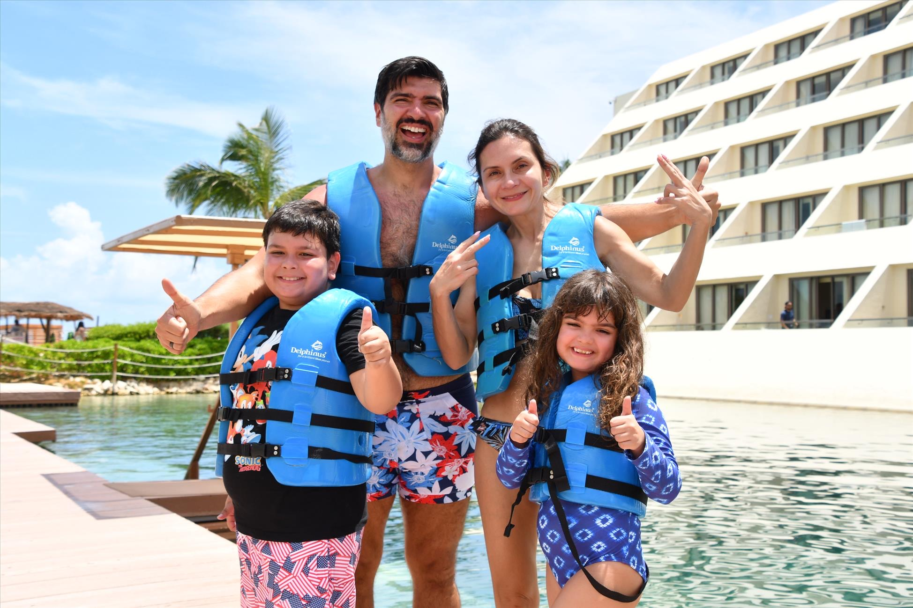
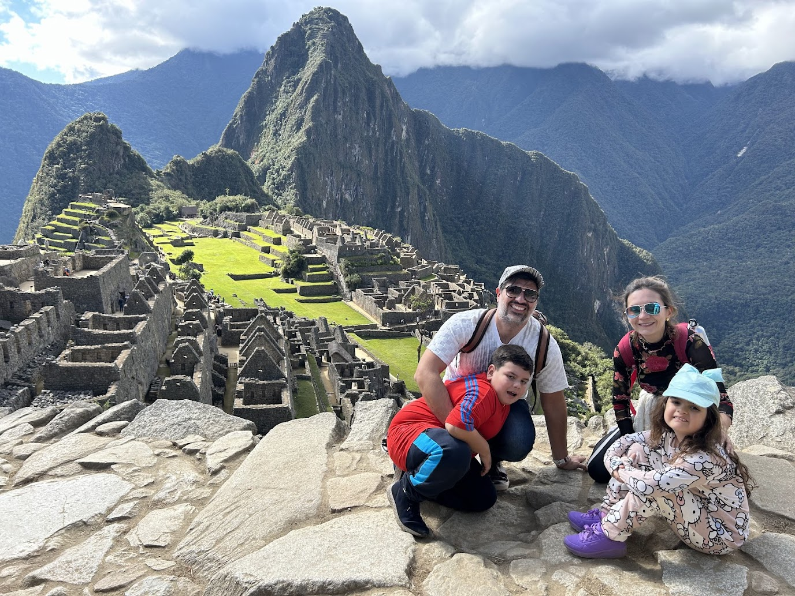

Making More Memories
Molina-Lang Family
Florida Adventure 2026
Delray Beach • Palm Beach • Boca Raton • Fort Lauderdale
Jul 28 - Aug 8, 2026 • 11 noches • 2 bases • 1000 aventuras
Viaje Familiar a Florida 2026
2 adultos + 2 chicos (9 y 11) | Desde Lima, Peru
Comparacion Manzanas con Manzanas
Datos verificados en paginas oficiales. Precios de KAYAK para Jul 28-Aug 2 (Naples) y Aug 2-8 (Costa Este). Todos con 2 adultos + 2 ninos.
| Metrica | JW Marriott Marco Island |
Edgewater Beach Naples |
Naples Bay Resort Cottages |
Lago Mar Fort Lauderdale |
Opal Grand Delray Beach |
|---|---|---|---|---|---|
| Base | Marco Island (Naples) | Naples | Naples | Fort Lauderdale | Delray Beach |
| Tipo | Cadena (Marriott Bonvoy) | Independiente (Opal Collection) | Independiente | Family-owned 50+ anos | Independiente (Opal Collection) |
| Habitacion recomendada | Two-Bedroom Lanai Suite | Two Bedroom King/King Suite - Gulf View ($720) o King/Queen Beachfront ($1,018) |
Two-Bedroom Cottage | Two-Bedroom Suite with Views (Oceanfront) | South Tower Two Bedroom King/King Suite - Oceanfront |
| Dormitorios | 2 separados | 2 separados | 2 separados (casita) | 2 separados | 2 separados |
| Camas | 1K + 2Q + sofa | 2 Kings + Queen sofa Padres: 1 King | Chicos: 1 King | 1K + 1Q | 1K + Q/2T + sofa | 2 Kings + sleeper sofas Padres: 1 King | Chicos: 1 King |
| Banos | 2.5 | 2 | 2 (en-suite) | 2 | 2 en-suite |
| Superficie | ~111 m2 (~1,200 sq ft) |
~102 m2 (1,100 sq ft) |
~130-158 m2 (1,400-1,700 sq ft) |
~84-102 m2 (~900-1,100 sq ft est.) |
~167 m2 (1,800 sq ft) EL MAS GRANDE |
| Cocina | Kitchenette (micro, heladera) | Cocina completa (cooktop, dishwasher, heladera full) | Cocina gourmet completa | Kitchenette (Wolf micro, Miele 2-burner, heladera) | Verificar (villas si tienen cocina) |
| Living separado | Si (con pool table) | Si | Si + den | Si | Si |
| Balcon/Terraza | Si - wraparound, acceso directo playa | Si - vista Golfo | Si - lanai con mosquitero | Si - vista ocean/pool | Grand wrap-around con pergola + mesa 4 + balcon adicional en 1 BR |
| HOTEL / AMENITIES | |||||
| Total habitaciones | 726 (mega-resort) | 125 suites | ~87 + cottages | 204 | ~150 (boutique) |
| Piletas | 4 | 2 | 5 | 2 (1 lagoon 9,000 sq ft) | 1 oceanfront |
| Lazy River | No | No | Si | Si | No |
| Waterslide | Si (Tiki Pool) | No | No (cascada 2 pisos) | Si (lagoon pool) | No |
| Playa | Walk-out, Golfo, 3+ millas privada | Walk-out, Golfo, 7 millas | NO beachfront (shuttle/auto) | Walk-out, Atlantico, 500 ft privada | Oceanfront directa, Atlantico |
| Shuttle interno necesario | No shuttle pero resort MUY grande (726 hab) | No - hotel compacto | No interno | No - hotel compacto | No - hotel compacto |
| Desayuno | No incluido (12 restaurantes) | No (buffet ~$4-24/pers) | No (pero cocina completa) | No (buffet ~$21 adulto / $10 nino) | No (restaurante on-site) |
| Resort Fee | $55-60/noche | $45/noche | $50/noche + tax | $0 - SIN resort fee | ~$45 est. (Opal Collection) |
| Parking | Self $38 / Valet $48 por noche | Gratis (incluido) | $20/noche | Gratis (valet + self) | Verificar |
| Rating | 8.8/10 KAYAK 4.3/5 Marriott |
8.4/10 KAYAK | 8.9/10 KAYAK | 8.8/10 KAYAK #1 Family Hotel USA |
4/5 TripAdvisor |
| Estilo | Renovado 2023 | Renovado, coastal | Residencial moderno | Classic/vintage (puede lucir anticuado) | RECIEN RENOVADO - coastal chic moderno |
| Ubicacion extra | Marco Island (tranquilo) | Gulf Shore Blvd (residencial) | 5th Ave downtown Naples | S. Fort Lauderdale (residencial) | Delray Beach - caminable a Atlantic Ave (80+ restaurantes) |
| PRECIOS (verificados) | |||||
| Precio/noche hab. base | $524 Fuente: KAYAK Jul 28-Aug 2 |
$484 Fuente: KAYAK Jul 28-Aug 2 |
$261 Fuente: KAYAK Jul 28-Aug 2 |
$304 Fuente: KAYAK Aug 2-8 |
$324 Fuente: KAYAK $279 VERIFICADO calendario sitio oficial Aug 2-8 |
| Precio hab. estandar sitio oficial | $518-595 VERIFICADO en Marriott.com Jul 28-Aug 2, 2 adultos 2 ninos |
$657 (1-BR Beachfront) VERIFICADO en reservations.opalcollection.com Jul 28-Aug 1 |
No encontre booking online para cottages. Llamar: (239) 530-1199 | Lagomar.com no tiene booking online. Llamar: (954) 523-6511 o reservations@lagomar.com | $279/noche base VERIFICADO calendario sitio oficial Aug 2-8, 2ad+2ch |
| Precio Suite 2-BR/noche | No encontre online Lanai 2-BR es categoria premium, no aparece en la web LLAMAR: (239) 394-2511 Estimado: ~$900-1,200+ (basado en que la estandar es $518-595) |
$720 King/King Gulf View $1,018 King/Queen Beachfront VERIFICADO en sitio oficial Jul 28-Aug 1, 2ad+2ch |
No encontre online LLAMAR: (239) 530-1199 Estimado: ~$450-650 (basado en KAYAK base $261 + premium cottage) |
No encontre online LLAMAR: (954) 523-6511 Estimado: ~$450-600 (basado en KAYAK base $304 + premium 2-BR) |
No encontre online LLAMAR: (561) 278-5755 Estimado: ~$600-900 (base $279, pero 2-BR 1800sqft es premium alto) |
| Resort Fee/noche | $55-60 Fuente: Marriott.com |
$45 Fuente: sitio oficial (incluido en precio mostrado) |
$50 + tax Fuente: web research |
$0 VERIFICADO: SIN resort fee |
~$45 est. Opal Collection tipico. Verificar al reservar. |
| Parking/noche | Self $38 / Valet $48 Fuente: Marriott.com |
$0 (gratis) Fuente: sitio oficial |
$20 Fuente: web research |
$0 (gratis, 1 auto) VERIFICADO |
Verificar Preguntar al reservar |
| TOTAL ESTIMADO ESTADIA | ~$5,000-6,500+ (5 noches Lanai 2-BR + fees) ESTIMADO - llamar hotel para confirmar |
$3,825 (King/King Gulf View) $5,315 (King/Queen Beachfront) (5 noches incl. resort fee) VERIFICADO sitio oficial |
~$2,600-3,600 (5 noches cottage + fees) ESTIMADO - llamar hotel |
~$2,700-3,600 (6 noches 2-BR, $0 fees) ESTIMADO - llamar hotel |
~$3,600-5,400+ (6 noches 2-BR + fees est.) ESTIMADO - llamar (561) 278-5755 |
Nota sobre el JW Marriott
El JW Marriott SI tiene una Two-Bedroom Lanai Suite (111 m2, planta baja con acceso directo a playa, wraparound balcon). Es una suite premium excelente. Sin embargo: es el mas caro con diferencia (~$1,000-1,300/noche total con fees), el resort tiene 726 habitaciones (mega-resort), muchos huespedes con puntos Bonvoy, y los fees ocultos suman ~$100/noche. Para tu perfil (independiente, chico, sin loyalty inflation), las otras opciones encajan mejor.
Base 1: Naples / SW Florida
5 noches: 28 julio - 2 agosto 2026
Edgewater Beach Hotel


Two Bedroom King/King Suite - Gulf View
Hotel y Amenities
NOTA: Tu screenshot era 4 noches (Jul 28-Aug 1). Para 5 noches (Aug 2 checkout) el precio puede variar ligeramente. Verificar en sitio oficial.
A favor
- Unico all-suites beachfront de Naples
- 2 dormitorios reales + cocina completa
- 2 piletas (leisure + lap pool)
- Hotel chico (125), intimo, sin shuttle
- Playa walk-out 7 millas, kayak incluido
- Independiente, sin loyalty inflation
En contra
- Precio alto para 2-BR
- Resort fee $45/noche
- Algunas reviews mencionan areas datadas
- Desayuno no incluido ($4-24/pers buffet)
Naples Bay Resort - The Cottages


Two-Bedroom Cottage
Hotel y Amenities
A favor
- Mas espacio (130-158 m2, el mas grande)
- Lazy river + 5 piletas
- Cottages = maxima privacidad
- Cocina gourmet completa
- Downtown Naples caminable
- Precio mas accesible
En contra
- NO beachfront (auto/shuttle para playa)
- Resort fee $50 + parking $20 = $70/noche extras
- Minimo 6 noches para cottages
- Cottages via Vacasa (reviews mixtas)
JW Marriott Marco Island Beach Resort
Two-Bedroom Lanai Suite
Hotel y Amenities
A favor
- Lanai Suite espectacular con acceso directo playa
- 3+ millas de playa privada en Marco Island
- 12 restaurantes, spa, 2 golf courses
- Waterslide en Tiki Pool
- Marriott Bonvoy perks/upgrades
En contra
- El MAS caro con diferencia
- 726 habitaciones = mega-resort crowded
- ~$100/noche en fees ocultos (resort + parking)
- Mucha gente con puntos Bonvoy
- Solo kitchenette (no cocina completa)